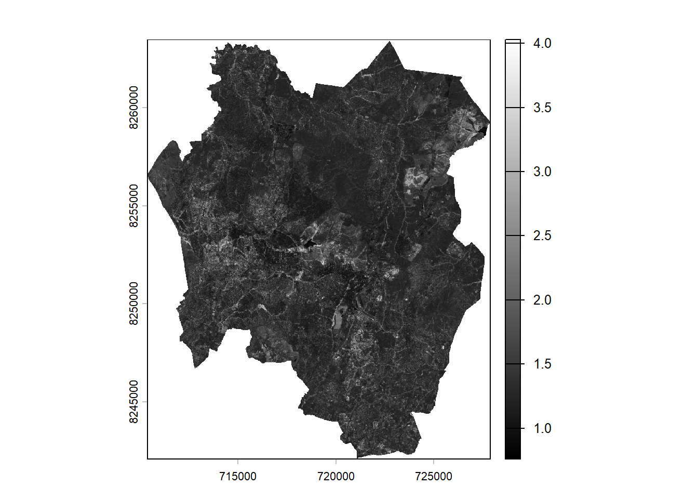
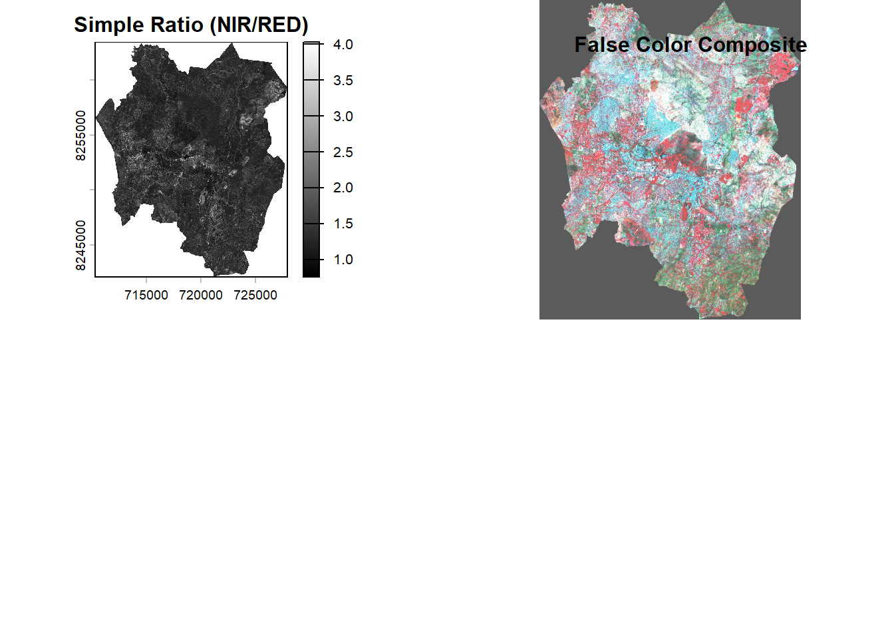
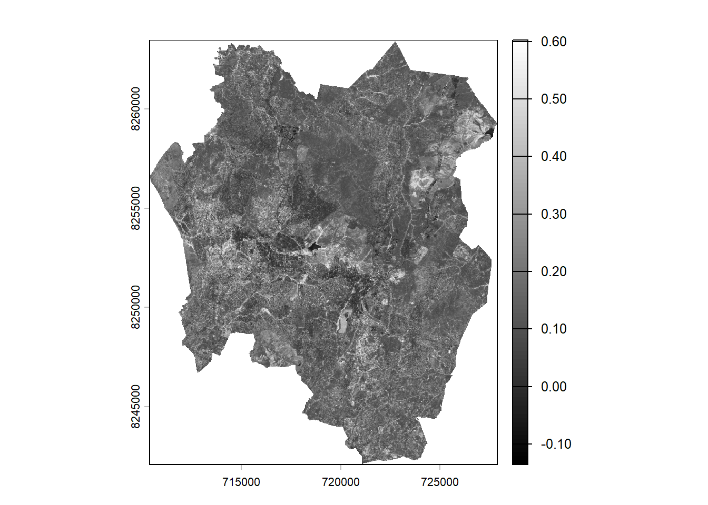
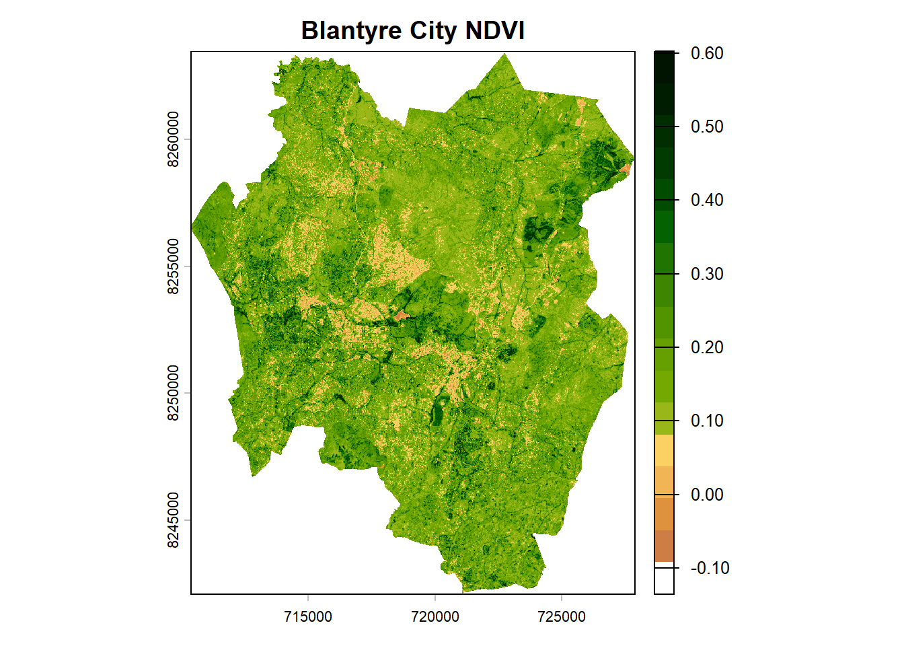
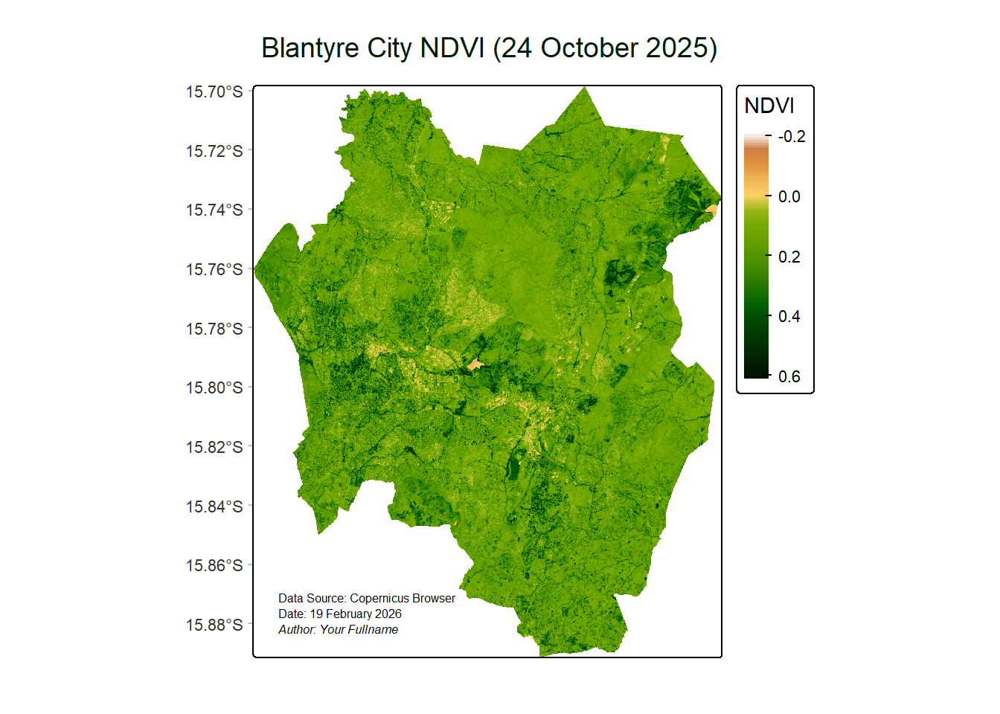
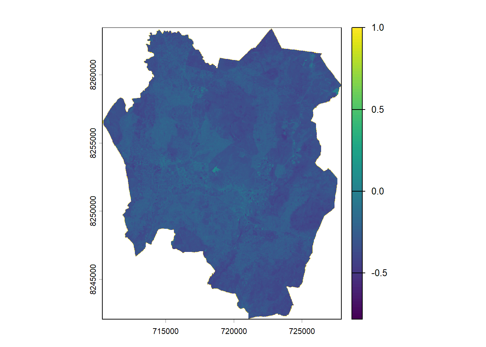
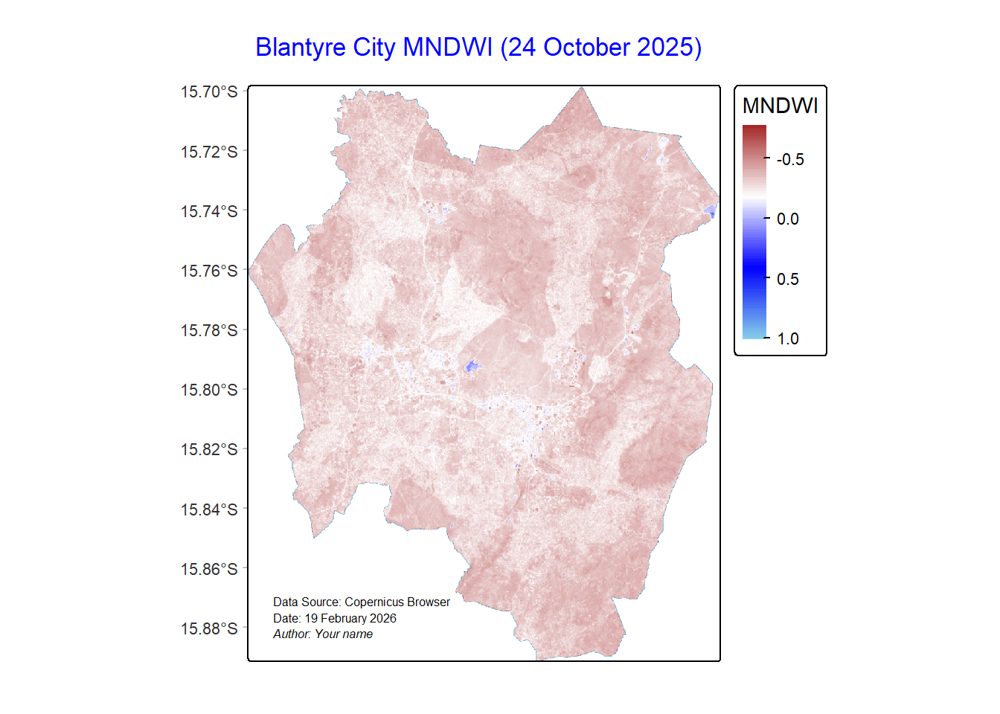

library(terra)
library(tmap)Band Mathematics and Spectral Indices
Introduction
Remote sensing data, particularly from multispectral and hyperspectral satellites, offers extensive information about the Earth’s surface. Each spectral band captures reflected or emitted radiation at designated wavelengths, which allows for the analysis of features like vegetation, water bodies, and soil. However, analyzing a single band often yields limited insights.
Band mathematics involves combining or manipulating these spectral bands through arithmetic operations (such as addition, subtraction, and division) to derive significant information. This serves as the basis for spectral indices, which are formulas that emphasize certain surface characteristics, including vegetation vigor, water presence, or urban areas.
Some of the frequently utilized spectral indices comprise:
- Normalized Difference Vegetation Index (NDVI): Showcases the health of vegetation.
- Modified Normalized Difference Water Index (MNDWI): Improves the detection of open water.
- Normalized Difference Built-up Index (NDBI): Identifies urban regions.
In this tutorial, we will illustrate how to calculate and visualize spectral indices in R, utilizing packages like raster, terra, and tmap.
Overview
By the end of this tutorial, you will be able to:
- Access and manage multispectral raster data in R.
- Execute band mathematics to generate new layers.
- Calculate and understand common spectral indices.
- Display the results with maps suitable for reports and presentations.
This practical approach will assist you in seamlessly integrating remote sensing analysis into your R workflow, promoting reproducible and efficient processing of satellite imagery.
Required packages
You will use the following packages:terra and tmap.
Load packages
Data
For this tutorial, you will use Sentinel-2 Level-2A Surface Reflectance bands for Blantyre city, Malawi acquired on October 24, 2025. The Sentinel-2 Level-2A product provides atmospherically corrected surface reflectance (SR) images, derived from the corresponding Level-1C products.
The dataset can be accessed from here.
Spectral Properties of Materials
Different surface features—such as water, bare soil, and vegetation—reflect electromagnetic radiation in distinct ways across different wavelengths. The pattern of reflected radiation across these wavelengths is known as the surface’s spectral signature.

So it is easy to identify the kind of material we are dealing with in an imagery by looking examining its spectral signature.
Spectral Indices
A spectral index is a mathematical formula applied to the different spectral bands of an image for each individual pixel. Often uses simple band ratios to emphasize particular surface processes or characteristics. It minimizes the influence of atmospheric conditions, sensor noise, and sun angle, enabling more reliable comparisons across space and time.
Spectral indices have numerous applications such as, Vegetation Health, Burned Area Mapping and Fire Severity, Water Content,and geologic Mapping.
1. Simple Ratio
Spectral ratios (or Band ratios) use two or more different bands to enhance specific spectral properties. Processing includes addition, subtraction, division, and more.
NIR/RED
When the Near Infrared band is divided by the red band, it results into an image that has the presence of vegetation enhanced. The brighter the tones, the denser the vegetation.
Read data
b1 <- rast("../assets/data/bt_s2_images/s2_b01.tif")
b2 <- rast("../assets/data/bt_s2_images/s2_b02.tif")
b3 <- rast("../assets/data/bt_s2_images/s2_b03.tif")
b4 <- rast("../assets/data/bt_s2_images/s2_b04.tif")
b5 <- rast("../assets/data/bt_s2_images/s2_b05.tif")
b6 <- rast("../assets/data/bt_s2_images/s2_b06.tif")
b7 <- rast("../assets/data/bt_s2_images/s2_b07.tif")
b8 <- rast("../assets/data/bt_s2_images/s2_b08.tif")
b8a <- rast("../assets/data/bt_s2_images/s2_b8A.tif")
b9 <- rast("../assets/data/bt_s2_images/s2_b09.tif")
b11 <- rast("../assets/data/bt_s2_images/s2_b11.tif")
b12 <- rast("../assets/data/bt_s2_images/s2_b12.tif")Remember the properties of Sentinel-2 image bands:
| Band | Name | Spatial Resolution | Wavelength (nm) |
|---|---|---|---|
| B01 | Coastal aerosol | 60 m | 443 |
| B02 | Blue | 10 m | 490 |
| B03 | Green | 10 m | 560 |
| B04 | Red | 10 m | 665 |
| B05 | Vegetation Red Edge 1 | 20 m | 705 |
| B06 | Vegetation Red Edge 2 | 20 m | 740 |
| B07 | Vegetation Red Edge 3 | 20 m | 783 |
| B08 | NIR | 10 m | 842 |
| B8A | Vegetation Red Edge | 20 m | 865 |
| B09 | Water Vapour | 60 m | 945 |
| B11 | SWIR 1 | 20 m | 1610 |
| B12 | SWIR 2 | 20 m | 2190 |
# Compute a simple ratio, NIR/RED
sr <- b8/b4# Plot the simple ratio
plot(sr,col = gray(0:100/100))
In the image, lighter tones represent areas with denser vegetation. The legend in the plot displays higher values with lighter colors and lower values with darker colors.
Confirm the vegetation enhancement by plotting a false color composite. In a false color composite, regions with denser vegetation appear darker red, while urban areas and bare soil appear gray or tan, and water bodies are shown in shades of blue or black.
s2_fcc <- c(b8, b4, b3)
par(mfrow = c(2,2))
plot(sr,col = gray(0:100/100), main="Simple Ratio (NIR/RED)")
plotRGB(s2_fcc, stretch="hist", main="False Color Composite")
title("False Color Composite")
2. Normalised Difference Vegetation Index (NDVI)
NDVI is one of the commonly used spectral indices used for vegetation health monitoring.
NDVI is based on the Based on the relationship between red and near-infrared wavelengths. Chlorophyll strongly absorbs visible (red). Plant structure strongly reflects near-infrared.
NDVI is calculated: \[ NDVI = \frac{NIR - Red}{NIR + Red} \]’
Where:
- NIR = Near Infrared band
- Red = Red band
NDVI values range from -1.0 to 1.0. Negative values to 0 mean no green leaves. Values close to 1 indicate the highest possible density of green leaves.
For Sentinel-2: \[ NDVI = \frac{b8 - b4}{b8 + b4} \]
ndvi <- ((b8-b4)/(b8 + b4))Plot ndvi map
plot(ndvi,col = gray(0:100/100))
The NDVI image produces pixel values that range between –1 and +1. Values approaching +1 appear brighter and typically indicate denser, healthier vegetation. In this particular image, the values span from –0.10 to +0.6, as there are no pixels representing the extreme ends of the full NDVI range.
The gray scale image doesn’t look impressing. You will use a custom palette commonly used for visualising NDVI.
Create color palette
ndviPalette <- c('#FFFFFF', '#CE7E45', '#DF923D', '#F1B555', '#FCD163', '#99B718','#74A901', '#66A000', '#529400', '#3E8601', '#207401', '#056201', '#004C00', '#023B01', '#012E01', '#011D01', '#011301')#plot
plot(ndvi, col=ndviPalette, main="Blantyre City NDVI")
What if we used tmap for the final NDVI map?
ndviMap <- tm_shape(ndvi) +
tm_raster(
col.scale = tm_scale_continuous(values = ndviPalette),
col.legend = tm_legend(title = "NDVI")
) +
tm_title("Blantyre City NDVI (24 October 2025)", color = "#011D01") +
tm_credits(
"Data Source: Copernicus Browser",
position = c("left", "bottom"),
size = 0.5
) +
tm_credits(
"Date: 19 February 2026",
position = c("left", "bottom"),
size = 0.5
) +
tm_credits(
"Author: Your Fullname",
fontface = "italic",
position = c("left", "bottom"),
size = 0.5
) +
tm_graticules(
lines = FALSE,
col = "grey",
labels.size = 0.7
)# Display the map
ndviMap
To save the map,
#tmap_save(ndviMap, "Blantyre City NDVI.png")3. Modified Normalised Difference Water Index (MNDWI)
The Modified Normalized Difference Water Index (MNDWI) utilizes the green and SWIR bands to enhance the detection of open water features, while reducing the influence of built-up areas that can sometimes appear similar to water in other indices.
\[ MNDWI = \frac{Green - SWIR}{Green + SWIR} \]
Where:
- Green = pixel values from the green band
- SWIR = pixel values from the short-wave infrared band
In case of Sentinel-2 imagery, \[ MNDWI = \frac{b3 - b11}{b3 + b11} \]
# Compute MNDWI
b3_20m <- resample(b3, b11, method="bilinear") # Resample b3 to 20m resolution of b11
mndwi <- ((b3_20m - b11)/(b3_20m + b11))# Plot MNDWI
plot(mndwi)
Open water features typically have positive values, while built-up land, soil, and vegetation produce negative values, making them easier to distinguish.
MNDWI can be used for mapping flood extent and to detect surface water. Positive values indicate high probability of water while negative values indicate soil, vegetation, or built-up areas.
We would create a better map for MNDWI using tmap:
# Define colors
mndwiParams <- c("brown", "white", "blue", "skyblue")#Define the map object
mndwiMap <- tm_shape(mndwi) +
tm_raster(col.scale = tm_scale_continuous(values = mndwiParams),
col.legend = tm_legend(title = "MNDWI")) +
tm_title("Blantyre City MNDWI (24 October 2025)", color = "blue") +
tm_credits(
"Data Source: Copernicus Browser",
position = c("left", "bottom"),
size = 0.5
) +
tm_credits("Date: 19 February 2026",
position = c("left", "bottom"),
size = 0.5) +
tm_credits(
"Author: Your name",
fontface = "italic",
position = c("left", "bottom"),
size = 0.5
) +
tm_grid(lines = FALSE) +
tm_graticules(lines = FALSE,
col = "grey",
labels.size = 0.7)#Display the map
mndwiMap
To save the map,
#tmap_save(mndwiMap, "Blantyre City MNDWI.png")